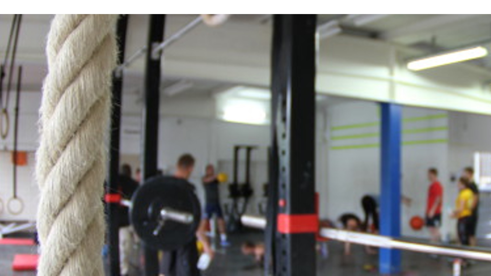

Published September 2020
For quite a while I was a bit of a CrossFit fanatic and used to go to the box at around 4 times per week. There was a great community and the workouts hit the spot of what I needed in terms of strength and cardio. The only painful part of it was the sign up process for the classes. There was this Doodle sheet where you had to check your name at the date and time you were planning to go. Now Doodle is a great tool for date finding and consensus finding, but if you regularly have to load a grid of around 250 members and 2 weeks full of classes it is not the best-suited tool for the task, it's too slow and the scrolling and finding is just too painful... So I decided to write an app that would allow Tom, the owner, to put his classes online and have people sign-up for classes or go on a wait list if the class was booked. That was back in 2017, and today it is still running.
There's not that many roles to distinguish in such an app, basically you're coach and manage classes and your athlete's membership or you're athlete and sign up for classes and pay to have your membership extended.
"The members appreciated the new login system from the beginning on. It's easy to use, simple to understand and most of all stable. Managing the memberships of all athletes has become much simpler and thanks to the new app we have a much better overview of our classes and members." Tom Krebs, owner and head coach
Let's look at what each role needs from such an app, starting with the athlete's view. As an athlete, at a minimum, you want to be able to:
Architecture diagram
Tools and build
Back then a friend of mine introduced me to Meteor.JS, a web framework based on Node.js which leverages a
distributed data protocol and a publish–subscribe pattern to automatically propagate data changes to clients without
requiring the developer to write any synchronization code. This last fact was particularly interesting to me because
it made sure that at any given time if someone signed up to a class the backend automagically took care of updating
all clients and making sure that classes were filled synchronously. Meteor relies on MongoDB as underlying database,
which is pretty easy to work with (as long as you don't have to manually make too many queries on the DB itself).
Deployment
To facilitate, automate and if need be easily repeat the deployment of the application, it is all scripted in Ansible scripts which completely automate and standardize the deployment of the application. If the application would need to be migrated or a second instance should be deployed, all it would require to be deployed on a new host are the Ansible dependencies on the host (python) and the running of 1 playbook.
Hosting
The complete app is obviously hosted on a public cloud hosting service. Starting out with a bare debian Linux image.
I am a big fan of containerized micro service architecture and opted for a Docker hosted approach from the start.
This has the great advantage that I can develop and test locally and ship tested finished containers to the VM, next
to all obvious advantages of a micro service architecture. Coupling this with Docker-Compose to handle the the
complete app deployment including DB and nginx proxy and the auto-restart of any failed container.
Example of statistics presented to the coaches
Load Balancing
Back then the box had around 250 members, some leaving a little more coming, we expected the total number not to
exceed 500 athletes + coaches. This means the load on the service at any given time is very low. Clearly numbers
that don't require a sophisticated load balancing, a hypothesis which has been holding true over the past 3 years.
The same goes for the server itself, a single instance of the meteor server can cope with the entire load at any
time.
Database resiliency and backup
The heat of the whole application clearly is the database, it stores all the members, the classes and the
subscriptions. As for the load balancing the number of requests is very low, given the limited number of athletes,
so I was not worried about DB performance issues. Meteor already takes care of synchronization across all clients
and the server component therefore handles DB writing without concurrency issues, especially since there is only 1
server instance running.
For the Backup Tom, the manager of the box, and me were discussing a couple of options. In the end we decided to go
for a pragmatic time-based approach where a Cron job takes care of backing up the DB every 15 minutes and exporting
a copy of it to an external DB at my home, where 2 weeks of backups are stored. He argued that he knew all his
members and could see if someone was in a class or not in case the DB failed and some transactions would have been
lost in the 15 minute time frame. We preferred this over a complicated fully resilient setup, since it kept server
and maintenance costs low. And so far in the over 3 years of the app running, it had never failed.
Testing
Writing most of the code for this app in JavaScript, I chose Mocha as the testing framework. The coverage of my tests in this app is not as extensive as I would like it to be, but the essential is there.
Monitoring
As there are only 3 components running and the resource consumption of the whole application is extremely low, the
monitoring of it all is relatively simple as well. I am using uptime robot to alert me if the service is up, this
queries the login endpoint and attempts a login with an uptime user. If I get a response back it means the proxy is
redirecting the request, the app is responding and able to query the user data from the database. This is basically
already enough. Additionally I make sure that the disk is not running out with log rotation and a simple disk
monitoring utility provided by the cloud hosting provider.
Screenshot of the uptime graph on uptimerobot.com
Generally the app has been running without issues since early 2017 and so far people are very happy with it.
Of course there had been hiccups and those were mainly caused by my inexperience and neglect. One time I forgot to
update the letsencrypt SSL certificate, leading to people not being able to access the app from devices which block
insecure connections to a https port (iPhones for example). As (bad) luck would have it I was on vacation just as
the certificate ran out with my laptop at home where the the private key to access my server was stored. Now I have
several timed alerts to make sure the cert is updated in time.
The other unwanted incident was related to my handling of Github. Out of neglect I had the login for my mailgun
account, the email service I was using, hardcoded in the mail handling code. Obviously a big no-no! The mail account
was hacked and used to send spam, a lot of spam! So much spam that the bill at the end of the month arose to $500.
Luckily my credit card company accepted my claim that the charge was fraudulent and refunded it. Needless to say
that this was a lesson of github login management I am going to remember for the rest of my life!
Now looking back I can smile about my mistakes and am happy I was able to learn from them! It being the first app I
had built, and am still operating and maintaining end to end on my own, I've been very grateful for all lessons
learned and am encouraged by the fact that is is still being used today!
In terms of high availability design and also in terms of monitoring there would be some additional work required for an app that would scale beyond the couple of athlete's at Tom's Box. So from a full-scale devops perspective it's a rather simple application. Nevertheless it has been running for over 3 years without any major issues (that I didn't brin on myself), so the pragmatic approach has proven resilient enough for the given requirements.
The whole experience was a great exercise to learn how to build, operate and maintain a hosted web application. It is still running, I learned a lot, Tom, the manager, as well as the community are enjoying using it. All in a success!